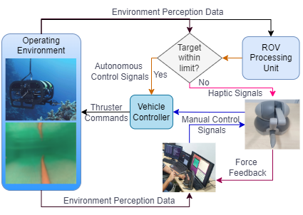

Visual–Haptic Robotic Teleoperation
Visual and haptic interfaces for remote robot operation, inspection, and physical intervention.
Khalifa University–Qatar University collaboration
I developed the proposal for Visual-Haptics for Remote Robot Operation, Inspection & Physical Intervention and lead the project, which was awarded under the 2025 Khalifa University–Qatar University Joint Research Program.

